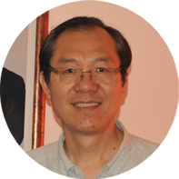

Education for Opportunity!
Our Mission
Save the Children Mission gives children in the West African villages of Senegal and Guinea Bissau an opportunity to receive what every child deserves – a healthy start and the opportunity to learn. Our fundraising efforts are aimed at providing quality educational facilities and programs that enhance lives. Education is the road that children follow to reach their full potential in life. It guides them to a better future. Please help us give them a better future by adopting a child in our program. By adopting a child you will be able to impact their lives by making a difference. Our first school is an elementary school that provides these children with education in math, reading, and writing. Most of these children are not interested in learning at first, they start going to school for the hot lunches we provide daily. For most of these children, this is the only meal they will receive the entire day, since at home they may not have the means to buy food. However, even though food is what they think of at first, after seeing what education does, more and more children become excited to learn. Our second school will be a trade school in Senegal; we are in the process of raising funds to build this school. By building this school we are giving the opportunity to thousands of young adults to have a future. The trade school will provide them with the means to learn a trade where each individual will be able to start a life in that field of work, such as being an electrician, carpenter, and a nurse. Our main goal is to better the lives of these children and young adults. Without our help these children can end up homeless, begging for money, and extremely ill. We ask that you adopt a child today so they may have a better tomorrow.
Dr. Jun Xu Founder